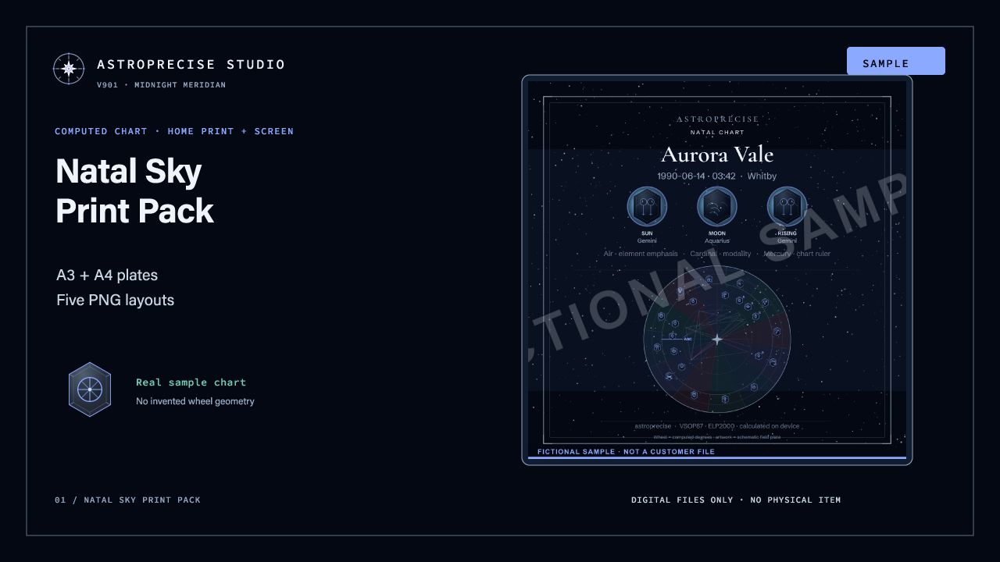

Two PDFs + five PNG layouts
Natal Sky
Print Pack
£18
Your computed natal wheel, composed for a wall, a screen and the formats you actually share.
- A3 dark and A4 ink-light RGB home-print PDFs
- 4960×7016 print and 2160×2160 square PNGs
- Story, phone wallpaper and Big Three PNGs
- Print guide, personal-use licence and file manifest
50% deposit at order · balance on completion